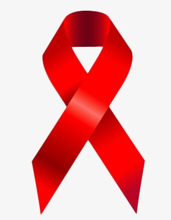

O que é HIV e aids?
HIV é a sigla em inglês para vírus da imunodeficiência humana. Causador da aids (da sigla em inglês para Síndrome da Imunodeficiência Adquirida), ataca o sistema imunológico, responsável por defender o organismo de doenças. Aids é a Síndrome da Imunodeficiência Humana, transmitida pelo vírus HIV, caracterizada pelo enfraquecimento do sistema de defesa do corpo e pelo aparecimento de doenças oportunistas.
Transmissão:
O vírus HIV é transmitido por meio de relações sexuais (vaginal, anal ou oral) desprotegidas (sem camisinha) com pessoa soropositiva, ou seja, que já tem o vírus HIV, pelo compartilhamento de objetos perfuro cortantes contaminados, como agulhas, alicates, etc., de mãe soropositiva, sem tratamento, para o filho durante a gestação, parto ou amamentação.
Sintomas:
Quando ocorre a infecção pelo vírus causador da aids, o sistema imunológico começa a ser atacado. E é na primeira fase, chamada de infecção aguda, que ocorre a incubação do HIV – tempo da exposição ao vírus até o surgimento dos primeiros sinais da doença. Esse período varia de 3 a 6 semanas. O organismo leva de 8 a 12 semanas após a infecção para produzir anticorpos anti-HIV. Os primeiros sintomas são muito parecidos com os de uma gripe, como febre e mal-estar. Por isso, a maioria dos casos passa despercebida. Caso haja suspeita de infecção pelo HIV, procure uma unidade de saúde e realize o teste.
Tratamento:
Ainda não há cura para o HIV, mas há muitos avanços científicos nessa área que possibilitam que a pessoa com o vírus tenha qualidade de vida. O tratamento inclui acompanhamento periódico com profissionais de saúde e a realização de exames. A pessoa só vai começar a tomar os medicamentos antirretrovirais quando os exames indicarem a necessidade. Esses remédios buscam manter o HIV sob controle o maior tempo possível. A medicação diminui a multiplicação do vírus no corpo, recupera as defesas do organismo e, consequentemente, aumenta a qualidade de vida. Para que o tratamento dê certo, o soropositivo não pode se esquecer de tomar os remédios ou abandoná-los. O vírus pode criar resistência e, com isso, as opções de medicamentos diminuem. A adesão ao tratamento é fundamental para a qualidade de vida. Mesmo em tratamento, a pessoa com aids pode e deve levar uma vida normal, sem abandonar a sua vida afetiva e social. Ela deve trabalhar, namorar, beijar na boca, transar (com camisinha), passear, se divertir e fazer amigos. Atualmente, existem os medicamentos antirretrovirais – coquetéis antiaids que aumentam a sobrevida dos soropositivos. É fundamental seguir todas as recomendações médicas e tomar o medicamento conforme a prescrição. É o que os médicos chamam de adesão, ou seja, aderir ao tratamento. Há, também, outras atitudes que oferecem qualidade de vida, como praticar exercícios e ter uma alimentação equilibrada.
Prevenção:
O meio mais simples e acessível de prevenção ao HIV é o uso de preservativos masculino e feminino em todas as relações sexuais. Os preservativos são distribuídos gratuitamente em unidades de saúde e também podem ser comprados em estabelecimentos da iniciativa privada, como farmácias e drogarias.
Ter HIV e não ter aids:
Há muitas pessoas positivas para o vírus HIV que vivem anos sem apresentar sintomas e sem desenvolver a doença. Elas podem transmitir o vírus pelas relações sexuais desprotegidas, pelo compartilhamento de seringas contaminadas ou de mãe para filho durante a gravidez e a amamentação. Por isso é importante fazer o teste regularmente e se proteger em todas as situações.